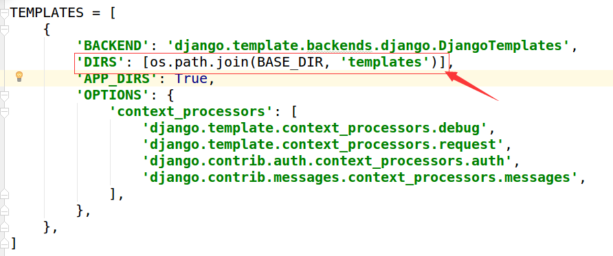

模板入门
问题
如何向请求者返回一个漂亮的页面呢？
肯定需要用到html、css，如果想要更炫的效果还要加入js，问题来了，这么一堆字段串全都写到视图中，作为HttpResponse()的参数吗？这样定义就太麻烦了吧，因为定义字符串是不会出任何效果和错误的，如果有一个专门定义前端页面的地方就好了。
解决问题的技术来了：模板。
在Django中，将前端的内容定义在模板中，然后再把模板交给视图调用，各种漂亮、炫酷的效果就出现了。
创建模板
为应用booktest下的视图index创建模板index.html，目录结构如下图：

设置查找模板的路径：打开test1/settings.py文件，设置TEMPLATES的DIRS值
'DIRS': [os.path.join(BASE_DIR, 'templates')],

定义模板
打开templtes/booktest/index.html文件，定义代码如下：
<html>
<head>
<title>图书列表</title>
</head>
<body>
<h1>{{title}}</h1>
{%for i in list%}
{{i}}<br>
{%endfor%}
</body>
</html>
在模板中输出变量语法如下，变量可能是从视图中传递过来的，也可能是在模板中定义的。
{{变量名}}
在模板中编写代码段语法如下：
{%代码段%}
视图调用模板
调用模板分为三步骤：
- 1.找到模板
- 2.定义上下文
- 3.渲染模板
打开booktst/views.py文件，调用上面定义的模板文件
from django.http import HttpResponse
from django.template import loader,RequestContext
def index(request):
# 1.获取模板
template=loader.get_template('booktest/index.html')
# 2.定义上下文
context=RequestContext(request,{'title':'图书列表','list':range(10)})
# 3.渲染模板
return HttpResponse(template.render(context))
打开浏览器刷新页面，显示效果如下图：

视图调用模板简写
视图调用模板都要执行以上三部分，于是Django提供了一个函数render封装了以上代码。 方法render包含3个参数：
- 第一个参数为request对象
- 第二个参数为模板文件路径
- 第三个参数为字典，表示向模板中传递的上下文数据
打开booktst/views.py文件，调用render的代码如下：
from django.shortcuts import render
def index(request):
context={'title':'图书列表','list':range(10)}
return render(request,'booktest/index.html',context)